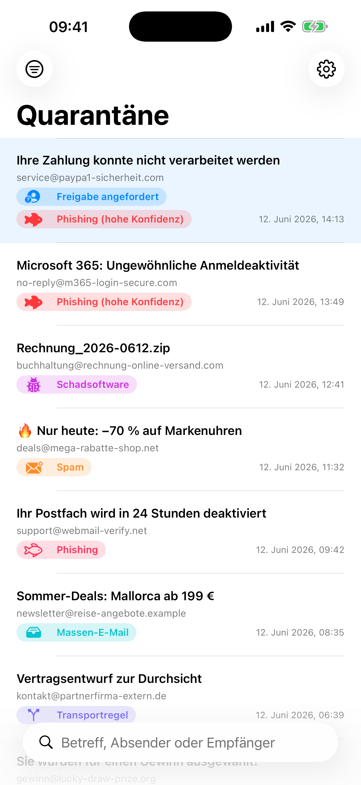
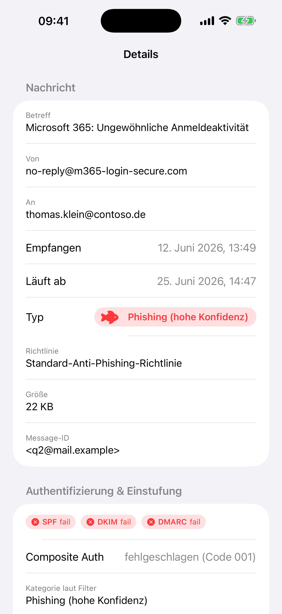
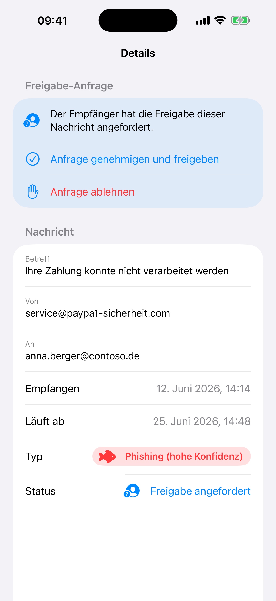

Q-Manager
M365 Quarantine Manager for iOS
Verwalte die Microsoft 365 / Defender for Office 365 E-Mail-Quarantäne direkt am iPhone — etwas, wofür Microsoft keine mobile Oberfläche anbietet:
- Quarantäne-Nachrichten einsehen, filtern und durchsuchen
- SPF/DKIM/DMARC-Status und Filter-Begründung auf einen Blick
- Sichere Vorschau (kein JavaScript, keine externen Inhalte)
- Nachrichten freigeben oder löschen, Freigabe-Anfragen genehmigen/ablehnen



Manage your Microsoft 365 email quarantine on iPhone: review, analyze (SPF/DKIM/DMARC, filter verdict), release and delete quarantined messages, and handle release requests.